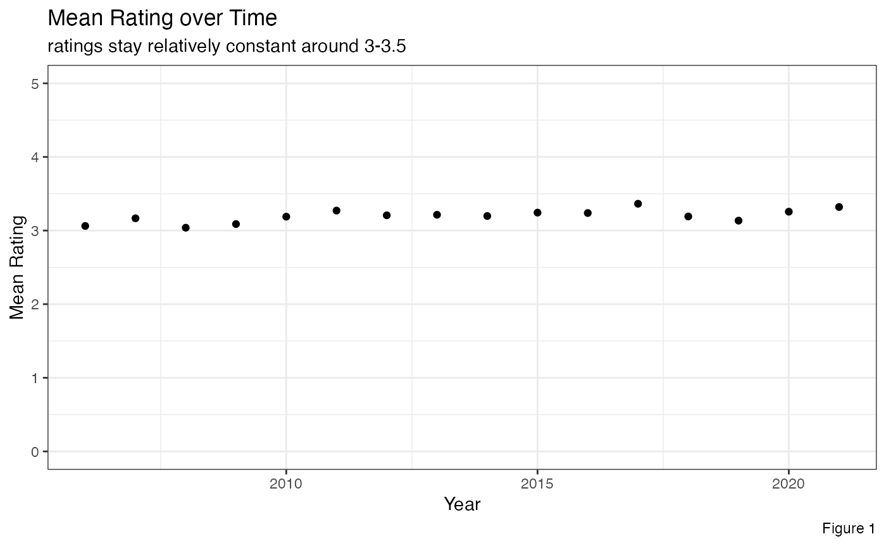
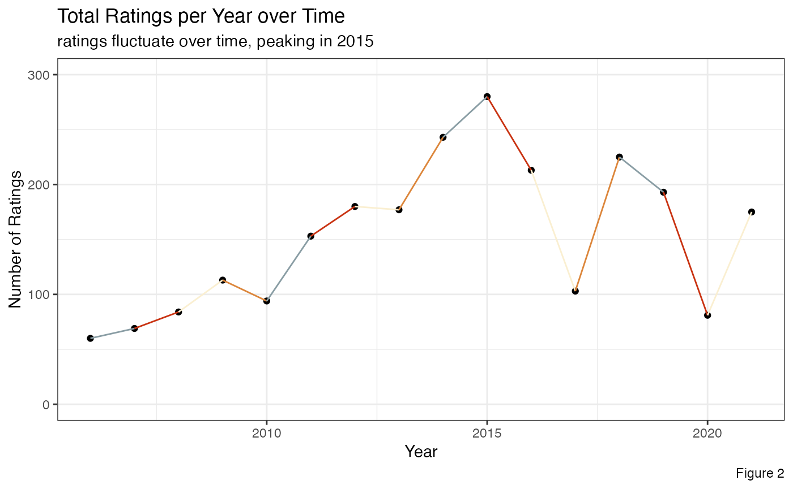
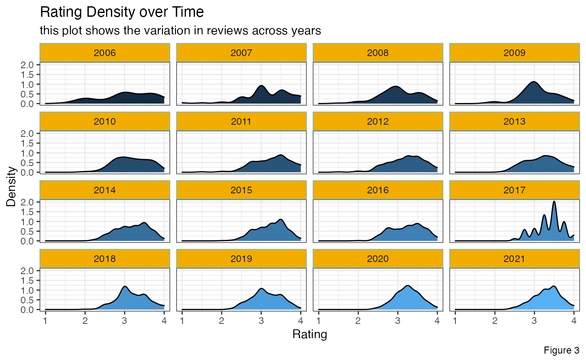

This tidytuesday dataset is about chocolate bar ratings. I want to analyze the distribution of the ratings over time. The data and dictionary are available here: https://github.com/rfordatascience/tidytuesday/blob/master/data/2022/2022-01-18/readme.md
library(wesanderson)
library(tidyverse)
#> ── Attaching packages ─────────────────────────────────────── tidyverse 1.3.1 ──
#> ✓ ggplot2 3.3.5 ✓ purrr 0.3.5
#> ✓ tibble 3.1.6 ✓ dplyr 1.0.8
#> ✓ tidyr 1.2.0 ✓ stringr 1.4.0
#> ✓ readr 2.0.1 ✓ forcats 0.5.1
#> Warning: package 'tidyr' was built under R version 4.1.2
#> Warning: package 'purrr' was built under R version 4.1.2
#> Warning: package 'dplyr' was built under R version 4.1.2
#> ── Conflicts ────────────────────────────────────────── tidyverse_conflicts() ──
#> x dplyr::filter() masks stats::filter()
#> x dplyr::lag() masks stats::lag()
library(tidytuesdayR)
library(ggplot2)
library(here)
#> here() starts at /Users/Kinnary/Desktop/Second_Year/Stat_Programming/wesanderson
library(lubridate)
#>
#> Attaching package: 'lubridate'
#> The following objects are masked from 'package:base':
#>
#> date, intersect, setdiff, union
if(!file.exists(here("data","tuesdata_chocolate.RDS"))){
tuesdata <- tidytuesdayR::tt_load('2022-01-18')
chocolate <- tuesdata$choc
# save the files to RDS objects
saveRDS(tuesdata$chocolate, file= here("data","tuesdata_chocolate.RDS"))
}
chocolate <- readRDS(here("data","tuesdata_chocolate.RDS"))
chocolate <- chocolate %>%
filter(!is.na(ingredients))
chocolate$cocoa_percent <- map(chocolate$cocoa_percent, function(x) str_sub(x,1,nchar(x)-1))
chocolate$cocoa_percent <- map_int(chocolate$cocoa_percent, function(x) as.integer(x))
chocolate <- chocolate %>%
mutate(country_of_bean_origin = str_to_upper(country_of_bean_origin))
mean_ratings <- chocolate %>%
group_by(review_date) %>%
summarize(mean_rating = mean(rating))
total_ratings <- chocolate %>%
group_by(review_date) %>%
summarize(total_rating = n())
ggplot(data = mean_ratings, aes(x=review_date, y=mean_rating)) +
geom_point() +
ylim(c(0,5)) +
labs(title = "Mean Rating over Time", subtitle = "ratings stay relatively constant around 3-3.5", caption = "Figure 1") +
xlab("Year") + ylab("Mean Rating") +
theme_bw()
pal <- wes_palette("Royal1")
ggplot(data = total_ratings, aes(x=review_date, y=total_rating)) +
geom_point() +
geom_line(color=rep(pal,4)) +
ylim(c(0,300)) +
labs(title = "Total Ratings per Year over Time", subtitle = "ratings fluctuate over time, peaking in 2015", caption = "Figure 2") +
xlab("Year") + ylab("Number of Ratings") +
theme_bw()
pal <- wes_palette("Darjeeling1")
ggplot(chocolate, aes(x = rating, fill = review_date)) +
geom_density() +
facet_wrap(~ review_date) +
theme_bw() +
labs(title = "Rating Density over Time", subtitle = "this plot shows the variation in reviews across years", caption = "Figure 3") +
xlab("Rating") + ylab("Density") +
theme(legend.position="none",
strip.background=element_rect(color=pal[5],
fill=pal[3]))
The plots show that the mean of the ratings stay relatively constant over time, while the number of ratings per fluctuates over time. Accordingly, the spread of the ratings each year is quite variable.
For grading:
- purrr: map, map_int
- formatting functions: filter, str_sub, str_to_upper, mutate, group_by, summarize
- geom_point, geom_line, geom_density